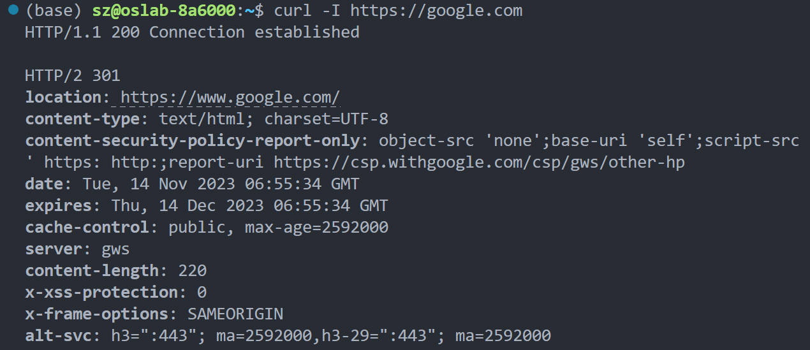

clash for linux安装
适用于只有终端（SSH）的机器，不需root权限
1. 下载、订阅链接
clash for linux 下载
Country.mmdb 下载
此目录下的文件都可以直接可以使用，也可以在此仓库下载其他版本：clash for linux(release)。
本人现用机场: https://ovocloud.cc，也可：https://www.paopao.dog。注册订阅教程可以参考里面具体内容。
country.mmdb文件下载： https://cdn.jsdelivr.net/gh/Dreamacro/maxmind-geoip@release/Country.mmdb ，放到~/.config/clash/ 中。
2. 安装
解压后增加执行权限。
1 | |
下载订阅文件config.yaml到任意位置，可以修改其中相关内容。文件内容参考如下：
1 | |
其中secret为管理端的密码，可以自行指定或不指定
3. 后台运行clash
可以简单在vscode里多开一个终端，或者使用screen命令，该命令也有助于防止因服务器断联导致的程序中断。
screen用法简介
新建一个screen会话
screen -S <名字>退出当前screen会话
键盘点击ctrl+a , 然后按d查看所有screen会话
screen -ls进入（恢复）某一screen会话
screen -r <会话序列号>说明:会话序列号可通过screen -ls获得
关闭screen会话
screen -X -S <序列号> quit
因此这里用法如下：
1 | |
这里的clash和config.yaml目录自己指定。
如一切正常会看到以下回显，按住 Ctrl 依次再按一下 A D 将 clash core 切换到后台。

4. 设置代理
然后我们需要把http和https的流量都发送到指定端口，在home目录下的.bashrc中添加以下并保存。
这一步可以自定义一个函数，开启clash只需要输入proxy即可，按Ctrl+C关闭clash并清空ALL_PROXY的值。
1 | |
并在终端里
1 | |
就可以正常使用啦。
管理界面：如果在vscode中，可以将服务器的9090端口转发到本机某个端口，比如9090，然后打开这个网址。其中 Host 为 Linux 主机的 IP 地址，端口为 9090（即config.yaml中指定的external-controller的值），密钥为第五步中设置的密码。填写妥当后点击确定。(但这一步我显示不出来，g)
5. 测试网络连通性
1 | |
如果联通正常有如下回显:

请注意 Ping 命令使用 ICMP 协议，默认不走代理。